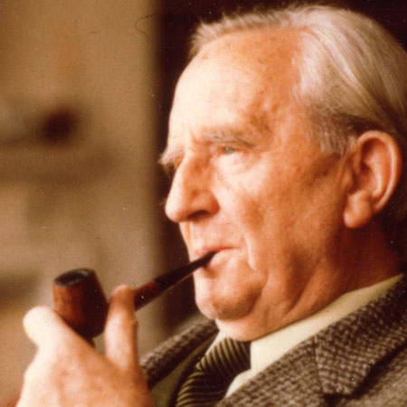
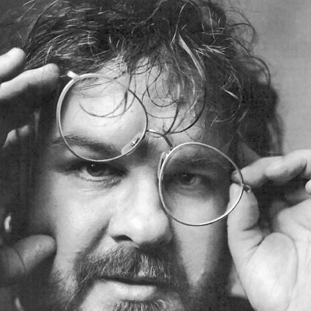

J. R. R. Tolkien
|  | John Ronald Reuel Tolkien was born in January 1892. He was an english, writer, poet and professor, mostly know for his three volume piece, The Lord of the Rings, as well as the fantasy novel, prequal to the trilogy, The Hobbit. It took him more than ten years to write it all, most of it during World War I, and more more year to publish the three volumes divided in six different books: The Fellowship of the Ring, The Two Towers, The Return of the King. Nowadays, it is still the second best-selling novel ever written. Tolkien died in September 1972, almost twenty years after the publication of his masterpiece.
|
Peter Jackson
|  | Peter Jackson was born in New-Zealand in 1961. Also director for King Kong, District 9 or Lovely Bones, he is mainly known for his adaptation and work on The Lord of The Rings. Willing to stay faithful to Tolkien's work, Jackson managed to negociate the shooting of three movies with New Line Cinema, he will shoot the movies simultaneously in New Zealand between 1999 and 2000. The movies were a real , and well-deservered, success : the trilogy received 17 Oscars and earned more than three billion dollars. Peter Jackson is currentlty shooting the prequal to the trilogy : The Hobbit. |